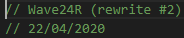

Crystal FM: A radio-like music provider for Discord
What is Crystal FM?
Crystal FM was a radio-like music provider built for Discord, an online messaging & voice service. Rather than serving on-demand song requests (as many other Discord-based music services did), Crystal FM simply provided easy access to a steady stream of cherry-picked songs.
The songs Crystal FM played primarily consisted of pop music released between the 1960s and 1990s, which was complemented with a wide range of unique instrumental tracks. They could've been songs I'd heard in movies, on the radio, or anywhere else where music happened to be playing.
Crystal FM was online for about a year, after which it became impractical to keep the service running. The bot was primarily used within a group of online friends when we would regularly listen to music together.
History
Originally, Crystal FM existed under a different name: Wave24R, which stood for "Wave24 Radio" - the "24" referencing the 24/7 music playback on offer.
The initial version of the bot was accompanied by a separate service titled Pre70sR, short for Pre-1970s Radio. As the name suggests, this version of the bot was dedicated to any tracks released before the 1970s. It played many of the older tracks I had in my collection. By separating the two services, Wave24 Radio could continue without mixing too many distinct eras, which would have resulted in an inconsistent listening experience.
Development

There are three iterations of the code powering Crystal FM:
- Wave24R Discord Bot
- Wave24R Icecast Server
- Crystal FM based on "S.A.F.E." This was the final rewrite of Crystal FM
This version of Wave24R is a modular Discord bot built to represent different "brands" of music bot (such as Crystal FM).
This version of Wave24R was intended for use as an internet radio station. It created an audio livestream to broadcast the music to any client.
This worked in parallel with a simple Discord bot I built to listen to the stream (amongst others) in any Discord voice channel.
To use it, you simply connected to a voice channel and sent a chat command specifying which station you wanted to listen to.
Technical Details
Crystal FM was written in JavaScript. More specifically, the server-side runtime environment Node.js.
I hosted Crystal FM on a Dell OptiPlex 780 desktop computer for about a year, after which it was no longer practical to keep running.